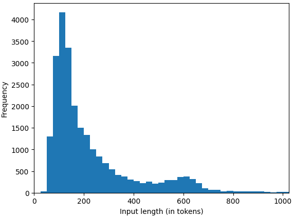
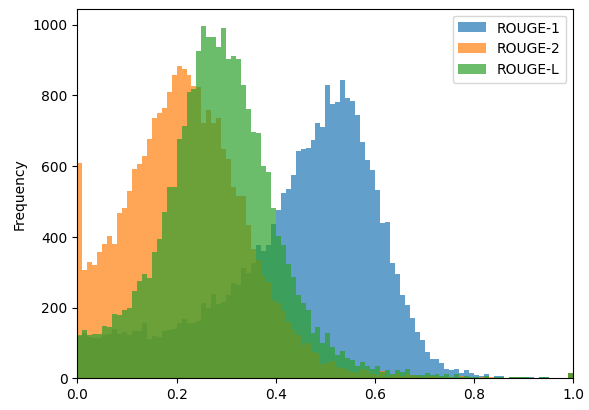

The MLCommonsⓇ MLPerfⓇ Inference benchmark suite is an industry standard for measuring the performance of machine learning (ML) and artificial intelligence (AI) workloads from diverse domains including vision, speech, and natural language processing. For each of these domains, the suite includes a carefully selected set of workloads that represents the state of the art in the industry across different application segments. These benchmarks not only provide key information to consumers for making application deployment and budget decisions but also enable vendors to deliver critical workload optimizations within certain practical constraints to their customers.
With the advent and widespread adoption of large language models (LLMs), it has become even more crucial to make objective, fair and robust benchmarks readily available to the community. With this goal in mind, the MLPerf Inference working group formed a special task force in early 2023 to explore, define, and create language benchmarks.
Building on small LLM in Inference v3.1
In deliberations leading up to the MLPerf Inference v3.1 round, which was available for submission in August 2023, the task force initially considered two principal LLM segments: a “smaller” LLM represented by GPT-J with six billion parameters, and a “larger” LLM based on GPT-3 with 175 billion parameters.
The smaller LLM was fine-tuned for text summarization, which is an application of increasing importance, aiding in human understanding and decision making from large bodies of text. This benchmark had a successful debut in the v3.1 round, with 11 organizations submitting 30 results across CPUs, GPUs, and custom accelerators. Details of the MLPerf Inference GPT-J benchmark and reference implementation can be found here.
The task force faced a number of technical challenges with the larger, more compute-intensive LLM, and the team eventually chose to postpone work on this benchmark to the MLPerf v4.0 round.
Introducing Llama 2 70B in MLPerf Inference v4.0
For the MLPerf Inference v4.0 round, the working group decided to revisit the “larger” LLM task and spawned a new task force. The task force examined several potential candidates for inclusion: GPT-175B, Falcon-40B, Falcon-180B, BLOOMZ, and Llama 2 70B.
After careful evaluation and discussion, the task force chose Llama 2 70B as the model that best suited the goals of the benchmark. The choice of Llama 2 70B as the flagship “larger” LLM was determined by several factors:
- Licensing restrictions: For an open benchmark consortium, model licenses must be flexible enough to offer unlimited access and use to participating submitters at minimum and, ideally, to the press and public in general. This requirement typically reduces the candidate pool to models (and datasets) with permissive licenses such as Apache 2.0, MIT, or similar. Thanks to Meta’s support, MLCommons is making the Llama 2 family of models available to MLCommons’ members, as part of the MLPerf benchmark suite, for the purpose of members conducting the benchmarking.
- Ease of use and deployment (technical): Llama 2 70B stands out for its accessibility and ease of deployment compared to models like GPT-175B that demand substantial resources and engineering effort for pre-training, fine-tuning, and framework alignment. The Llama-2-70B-Chat-HF model dramatically streamlined the MLPerf benchmark development process, allowing the task force to integrate an advanced LLM model without extensive resource allocation.
- Community interests: While LLM model parameter sizes have increased tremendously in the recent past, the broader ML/AI developer community’s interest also plays an important role in shaping industry adoption across different application segments. Using Hugging Face contributions and leaderboards as a proxy for community engagement, Llama 2 70B was the leading candidate for inclusion during the task force’s discussions.
- Quality: In gauging the suitability of candidate models, we considered their accuracy scores and output text quality across popular datasets curated for different language modeling tasks. Llama 2 70B was one of the best performing models in our evaluation under this criteria.
Choosing a task and a dataset for the LLM
The task force evaluated many of the popular tasks for LLMs and, after careful deliberation, chose to use a question-answering (or Q&A) scenario. We picked the Q&A task because it is one of the most common ways that LLMs are being used in serving applications today. Q&A tasks reflect real-world demands for natural-language understanding and interaction. We considered dialogue-based tasks, like an interactive chat session that accumulates context over a series of interactions, but their evaluation complexity posed challenges, particularly in ensuring accurate assessments and also in the difficulty of measuring performance during such a dialogue. Thus, to streamline our benchmarking process and ensure robust evaluation, we opted for the Q&A scenario, with discrete pairs of questions and answers, due to its widespread applicability and straightforward evaluation metrics.
Examining the field of available datasets for this task, we chose the Open Orca dataset among various top-rated datasets such as AllenAI/soda. Open Orca is recognized as one of the highest quality and most extensive datasets available for question answering. The dataset contains a fusion of augmented FLAN Collection data with one million GPT-4 completions, making it a rich source for evaluating NLP capabilities.
In order to shorten benchmark runtime, we decided to select a subset of 24,576 samples from this dataset. The samples in this dataset were further curated for characteristics such as prompt quality, sample source (e.g cot, flan), maximum input length (1,024 tokens), maximum output length (1,024 tokens) and minimum reference response length (at least three tokens) to create the validation set for the benchmark. Interested readers can refer to processorca.py for more details.

Figure 1: Input length distribution in the curated dataset
We observed that in general Llama 2 70B generates slightly longer outputs than GPT-4 on our dataset. Additionally, some of the output sequences from our model do not finish their generation within our bound of 1,024 tokens.
Choosing accuracy metrics for the LLM
For comprehensive evaluation, the LLM inference task force carefully considered how to adhere to a high standard of model quality. Given the potential accuracy and performance trade-offs during optimization, submissions should not deviate significantly from the output that is generated by the 32-bit floating-point (FP32) reference model that defines canonical correctness.
The task force investigated various accuracy metrics for language models, including perplexity, MMLU, MAUVE, and ExactMatch. Some of these metrics do not take the entire generated text into consideration (e..g perplexity and MMLU), while others have non-deterministic behavior (e.g. MAUVE). The task force ended up choosing ROUGE scores as the accuracy metrics. In essence, n-gram based metrics, such as ROUGE scores, measure how close a given text is to its reference. Keeping the robustness of the accuracy in mind, the taskforce sided with choosing a set of three ROUGE metrics for this benchmark: ROUGE-1, ROUGE-2 and ROUGE-L.
The reference FP32 implementation achieves the following reference ROUGE scores:
- ROUGE-1 = 44.4312
- ROUGE-2 = 22.0352
- ROUGE-L = 28.6162
The Llama 2 70B benchmark allows submissions under two categories: in the first category, all achieved scores must be above 99.9% of the reference scores; in the second category, all achieved scores must be above 99% of the reference scores. However, since there were no v4.0 submissions with the accuracy lower than 99.9%, the 4.0 results table contains only the highest accuracy category.
To further tighten this benchmark, the taskforce decided to allow only submissions with a generation length of 294.45 tokens per sample, with a +/- 10% tolerance.

Figure 2: ROUGE scores distribution in outputs from the reference implementation
Measuring performance of the LLM
An LLM inference takes as input several tokens (a sentence or paragraph) and generates tokens based on the instructions. In its most basic form, one could treat the problem as asking the benchmark to fill in the last word of a sentence. Internally, the processing happens in two main steps. The input tokens are processed together to generate the first output token. This step is commonly referred to as the prompt phase or the context phase. After this phase, computation is primarily limited to generating the rest of the tokens in the response, one token at a time, reusing the context from prior computation in each step. This phase is generally called the generation phase. It is critical for the performance and accuracy metrics to capture the application execution behavior in both of these phases of computation.
While other applications could use throughput metrics such as queries/second, the amount of computational work done by one LLM inference can be extremely different from another. This delta is due to the fact that queries can have different input and output token lengths. Therefore, the task force decided to use tokens/second as the metric for throughput measurement, which is a well understood and standard metric for LLM throughput measurement across the industry.
Latency constraints for the server scenario
The server scenario in MLPerf Inference benchmarks simulates online applications where query arrival is random and the response latency is important. The query arrival traffic is described with a Poisson distribution where the query arrival rate (queries per second or “target_qps”) is the Poisson parameter. The test is successful if latency constraints for the benchmark are met.
In industrial applications of LLMs, the following latency metrics are considered important:
- TTFT: Time to first token
- TPOT: Time per output token, sometimes also called TBT (time between tokens)
Using the typical human reading speed as a logical anchor, these latency constraints were set as:
- TTFT: <= 2 seconds
- TPOT: <= 200 milliseconds
A TPOT of 200 ms translates to a maximum allowed generation latency that maps to ~240 words per minute (depending on the tokenizer), which is often cited as the average human reading speed.
While reading speed is a good yardstick for generation tasks such as LLM-based chat or tech support, other use cases have tighter latency constraints. For example, code generation, real-time slide generation, and smart agents all require much faster response times.
Ensuring compliance to the benchmark criteria
To ensure compliance and prevent potential exploitation, the task force devised a compliance check mechanism. This test is designed to verify the adherence of tokens generated by submitters to predefined criteria. Specifically, three key tests are applied to the submissions:
- First token consistency: The first token generated must match the first token reported to the LoadGen for timing purposes, ensuring synchronization and accuracy in the token generation processes.
- EOS token validation: The end-of-sequence (EOS) token should not be generated more than once in the generated output, maintaining coherence and integrity in the completion of sequences.
- Token count verification: The total number of tokens generated by the model must align with the number reported to the LoadGen, validating the completeness and accuracy of the generated output.
Conclusion
In this post, we described the complexities involved in the choices of model, task, dataset, accuracy, performance, and verification of a contemporary LLM benchmark. We believe the design choices of this benchmark objectively address most of the critical deployment decisions faced by practitioners while delivering important performance insights to customers.
Details of the MLPerf Inference Llama 2 70B benchmark and reference implementation can be found here.
Given the overwhelming interests from vendors, as demonstrated by the number of submissions, we hope to continue to improve on the benchmark in future iterations, accounting for the different application domains that may steer LLM adoption.
Additional technical contributors: Jinho Suh, NVIDIA; Junwei Yang, Google; Pablo Gonzalez, MLCommons.